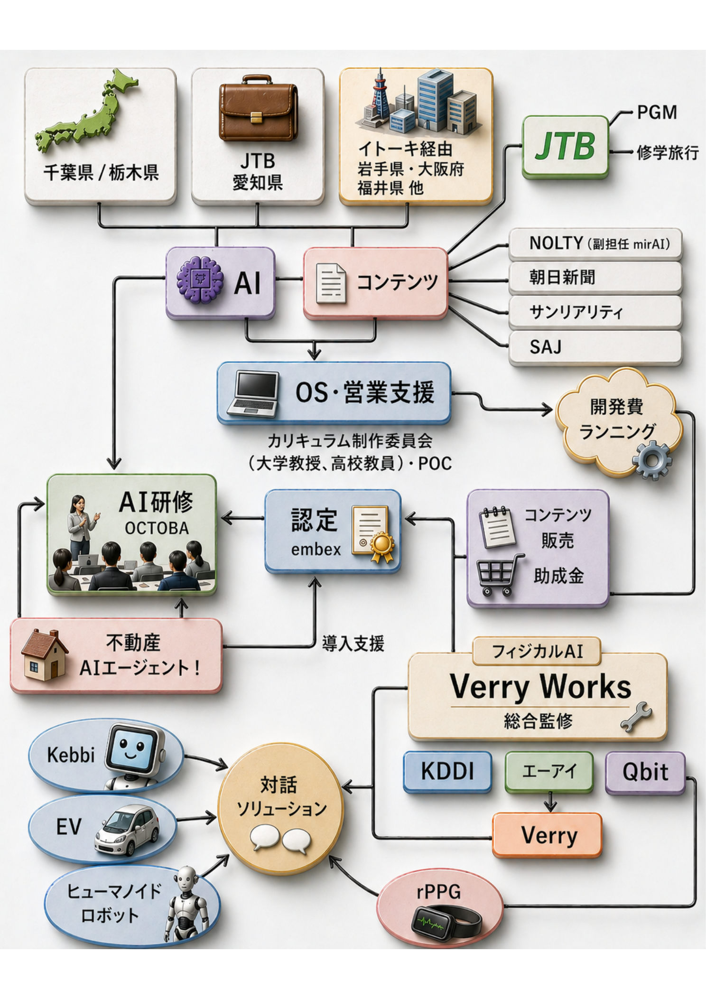

Core Thesis
Edutexの魅力は「案件数」ではなく、各事業が互いに送客・技術転用・信用補完する構造にある。
短期
AI講座・不動産AI・JTB PGMで現金化を先行。
中期
副担任mirAI NEXTとifLinkで学校・自治体導入を拡大。
長期
Verry Works、Verry、kebbiでフィジカルAI/ロボットOSへ拡張。
Correlation Map
事業相関図を中核にした全体俯瞰
添付の相関図をそのまま組み込み、右側に「今どこが伸びるか」を読み解くレイヤーを重ねました。

Edutex
Growth OS
Growth OS
教育OS
学校/自治体
学校/自治体
AI講座
即収益
即収益
JTB PGM
観光/探究
観光/探究
不動産AI
高単価PoC
高単価PoC
Verry Works
現場AI
現場AI
kebbi / Verry
ロボットUI
ロボットUI
Portfolio Cards
投資・参画したくなる事業カード
Growth Roadmap
12か月の成長ストーリー
見せ方の軸を「案件一覧」から「資金回収→信用形成→横展開」に変更しています。
0-3か月
キャッシュを作る
AI講座、不動産AI、JTB PGMの提案・LP・PoCを優先。
3-6か月
教育OSを標準化
N-E.X.T.類型別パッケージ、申請テンプレ、学校導入メニューを整備。
6-12か月
フィジカルAIへ拡張
Verry Works、Verry、kebbiへ知識DB・音声・ダッシュボードを横展開。
12か月以降
OS/ライセンス収益化
単発受託から、年額運用・成果KPI・ライセンス・RSへ移行。